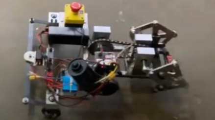
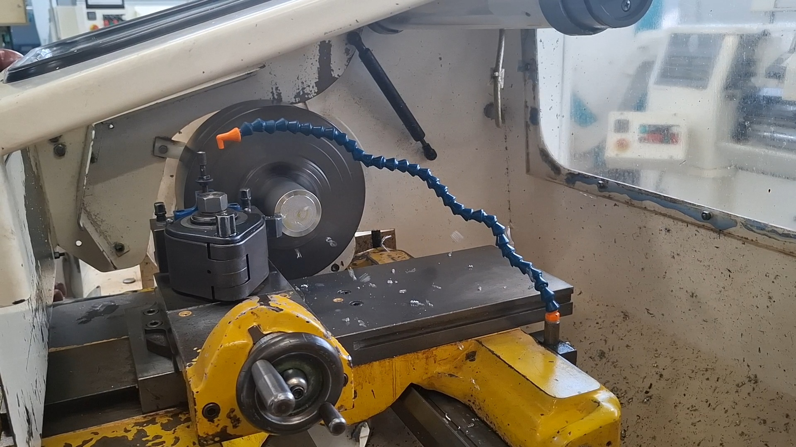
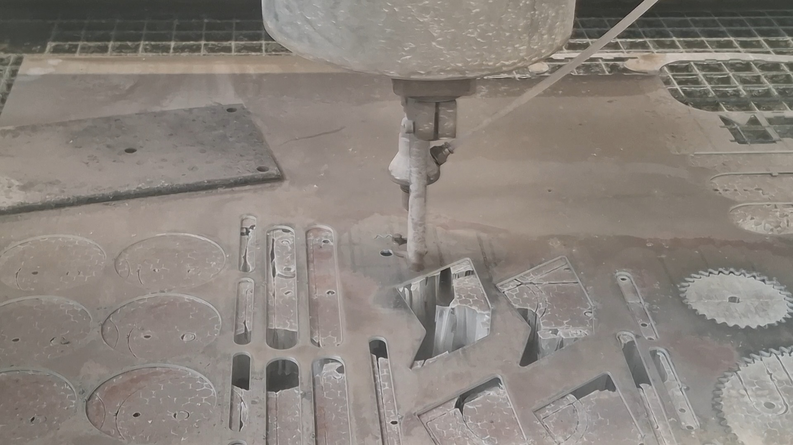
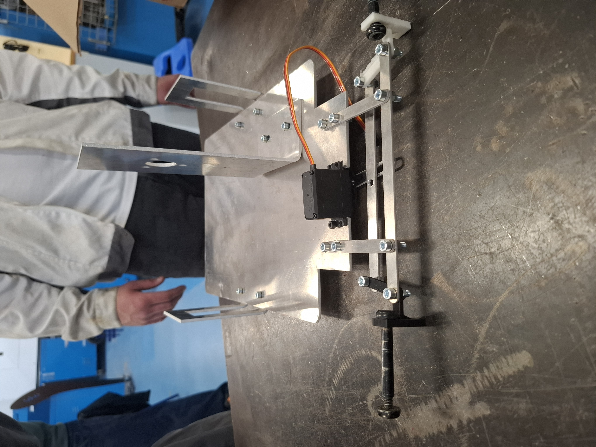
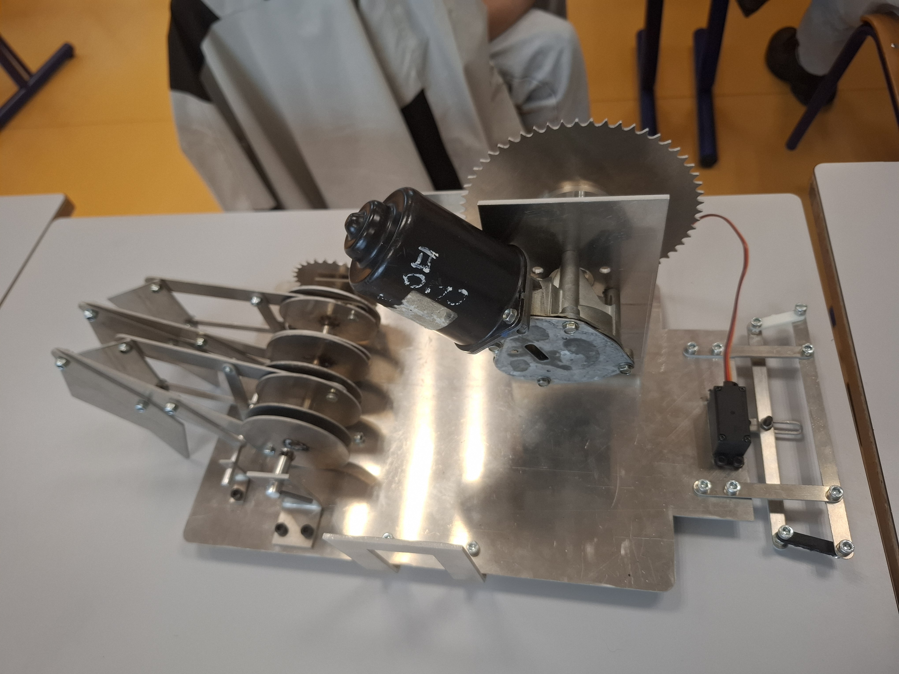

Projet 04 · Robotique
Conception d’un robot marcheur
Dans le cadre d’un projet en équipe à l'IUT, nous avons conçu, en équipe, et réalisé un robot ayant pour but de participer à une course interclasse. Cette page présente les grandes étapes du projet.
Choix de la solution - Etude de l'existant
Un cahier des charges nous a été fournis, faisant référence à un concours passé de BUT GMP. Notre objectif était donc, à partir d'éléments comme une batterie, un moteur essui-glace, un servo-moteur et une radio commande, de concevoir un robot. La première étape consistait donc à rechercher le moyen de créer le train avant, le train arrière, et notre transmission. Le robot devait se déplacer uniquement grâce aux pattes et se diriger grâce à deux roues liées à notre train avant, dirigé par le servo-moteur. Pour cela, nous avons recherché différentes solutions existantes pour nous inspirer.

L'une des solutions trouvées pour nous inspirer
Conception
Nous sommes donc parti sur un train avant muni de bielles pivotantes et de deux fusées pour maintenir les roues. Notre train arrière est constitué de quatre pattes avec un appui ponctuel sur le sol et d'un sorte de vilebrequin assurant une phase entre nos pattes. La transmission est assurée par une chaîne et deux pignons liés au moteur et au vilebrequin.
Nous avons réparti notre travail au sein du groupe et j'étais pour ma part sur la conception du train arrière. Cette phase de conception se déroulait sur CREO. L'objectif de notre fin de conception était d'animer le robot pour le voir marcher. La difficulté rencontrée était de réussir à placer correctment les pattes avec le vilebrequin, et que celui ci soit correctement conçu pour permettre d'avoir toujours deux pattes liés ensemble en terme de phase. Une deuxième difficulté était le placement de notre ensemble sur le bâti. Avec un poids imporant à l'arrière, il fallait assurer un bon maintien sur le bâti et que le vilebrequin soit bien adaptée à notre chaîne de transmission.

Fabrication - Usinage
La prochaine étape était la fabrication du robot. Au préalable, nous avions réalisé nos plans et créé nos gammes de fabrication. Nous avions à disposition les machines d'usinage de l'IUT, notamment des tours d'usinage tradionnel et une découpe jet d'eau pour la découpe de nos pièces.

Usinage d'un arbre du train arrière

Découpe jet d'eau
Montage
Nous sommes ensuite passé à la phase du montage du robot, et c'est cette partie qui nous a causé les plus de problèmes. Nous avions choisi de découper nos pièces dans l'aluminium pour respecter le poids maximum du cahier des charges. Or pour construire notre vilebrequin, nous avions besoin de souder des parties entre elles. Le soudage sur aluminium étant difficile à réaliser, nous avons demandé de l'aide à un ouvrier de l'atelier. Les soudures étaient extrêment fragiles et rendaient le montage des pattes très délicat.

Montage du robot
Course
Finalement nous sommes arrivés le jour de la course. Les soudures de notre vilebrequin n'ont pas tenu et les fusées des roues (faites en impression 3D) ont cassé. Nous n'avons donc pas pu concourir et réaliser la course. Cependant, au vu de l'avancée de notre projet, nous étions contents de notre parcours.
